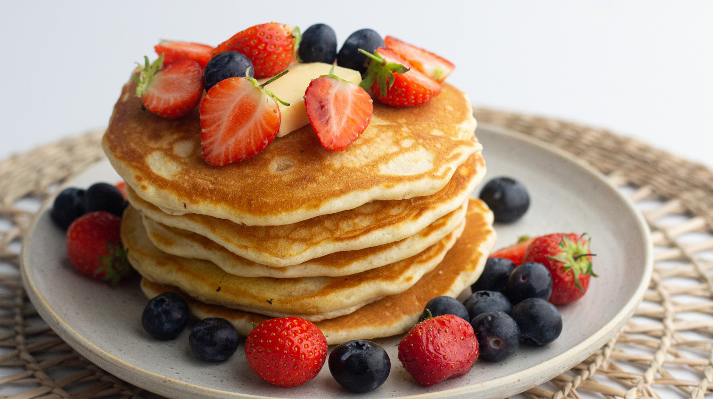

Palacinky recept

Chutny recept na palacinky
Suroviny
- vajce 1 ks
- hladka muka 200 g
- sol trochu
- mlieko 400 ml
Postup
- Ako prvé si nachystáme potrebné suroviny.
- Z uvedených surovín vypracujeme (rozhabarkujeme) hladké cesto.
- Cesto lejeme naberačkou na rozpálenú panvicu a pečieme z oboch strán.
- Existuje množstvo chutných receptov na ich sladké i slané verzie palaciniek. Inšpirujte sa našim výberom: Palacinky 10 x inak plus základný hrnčekový recept